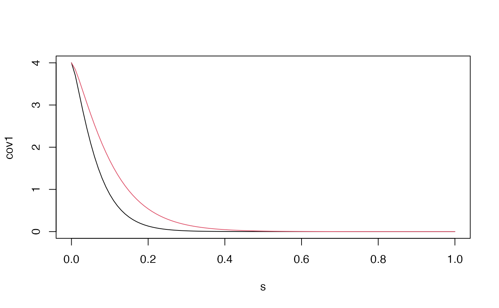

Function to change the parameters of a rSPDEobj1d object
Usage
# S3 method for rSPDEobj1d
update(
object,
user_nu = NULL,
user_alpha = NULL,
user_kappa = NULL,
user_tau = NULL,
user_sigma = NULL,
user_range = NULL,
user_theta = NULL,
user_m = NULL,
loc = NULL,
graph = NULL,
parameterization = NULL,
type_rational_approximation = object$type_rational_approximation,
...
)Arguments
- object
The covariance-based rational SPDE approximation, computed using
matern.rational()- user_nu
If non-null, update the shape parameter of the covariance function. Will be used if parameterization is 'matern'.
- user_alpha
If non-null, update the fractional SPDE order parameter. Will be used if parameterization is 'spde'.
- user_kappa
If non-null, update the parameter kappa of the SPDE. Will be used if parameterization is 'spde'.
- user_tau
If non-null, update the parameter tau of the SPDE. Will be used if parameterization is 'spde'.
- user_sigma
If non-null, update the standard deviation of the covariance function. Will be used if parameterization is 'matern'.
- user_range
If non-null, update the range parameter of the covariance function. Will be used if parameterization is 'matern'.
- user_theta
For non-stationary models. If non-null, update the vector of parameters.
- user_m
If non-null, update the order of the rational approximation, which needs to be a positive integer.
- loc
The locations of interest for evaluating the model.
- graph
An optional
metric_graphobject.- parameterization
If non-null, update the parameterization.
- type_rational_approximation
Which type of rational approximation should be used? The current types are "chebfun", "brasil" or "chebfunLB".
- ...
Currently not used.
Value
It returns an object of class "rSPDEobj1d". This object contains the
same quantities listed in the output of matern.rational().
Examples
s <- seq(from = 0, to = 1, length.out = 101)
kappa <- 20
sigma <- 2
nu <- 0.8
r <- sqrt(8*nu)/kappa #range parameter
op_cov <- matern.rational(loc = s, nu = nu, range = r, sigma = sigma, m = 2,
parameterization = "matern")
cov1 <- op_cov$covariance(ind = 1)
op_cov <- update(op_cov, user_range = 0.2)
cov2 <- op_cov$covariance(ind = 1)
plot(s, cov1, type = "l")
lines(s, cov2, col = 2)
